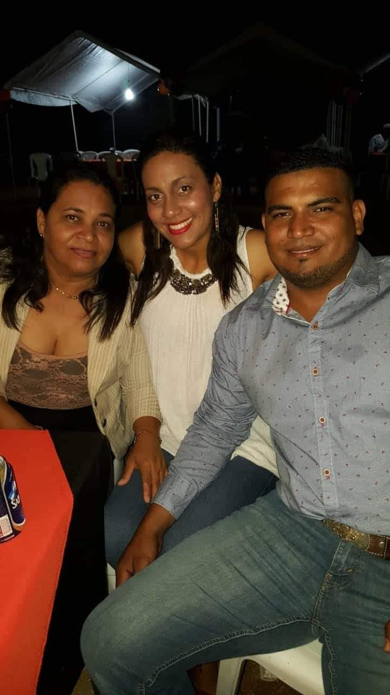

PasaTiempos
Familia
Ukelele
Manualidades
Leer
Evangelismo
Viajar


Soy una persona perseverante, me gusta aprender, soy amigable, me gusta trabajar en equipo.
Soy Maestra y parte de mi trabajo es compartir lo que he aprendido con los demas de manera que los que me ven y escuchan tengan un aprendizaje que sea significativo en sus vidas.
Mi filosofia de vida es disfrutar cada detalle de la vida, me gustan las cosas "inutiles", la luna, las estrellas,las flores, las hojas de los arboles, todo lo que para muchos pasa desapersivido.
PROPUESTA: La educacion virtual debe ser completamente interactiva, basada en el desarrollo de proyectos, para que el aprendizaje se optimo
Familia
Ukelele
Manualidades
Leer
Evangelismo
Viajar